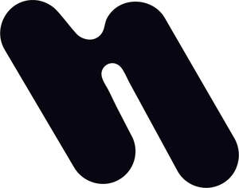

Trade Mark Journal No.2025/049 5 December 2025
UK00004302277 28 November 2025 (9,10,42,44)

- Class 9
- Audio equipment; Software; Wearable computer peripheral devices; Software applications; Scientific apparatus and instruments; Scientific and laboratory devices for treatment using electricity; Wearable digital electronic communication devices; Downloadable mobile applications for use with wearable computer devices; Electronic sensors; Wearable digital electronic devices capable of providing access to the Internet; Packaged software; Operating software; Computer application software for use with wearable computer devices; Wearable computer hardware; Wearable audio equipment; Wearable communications devices in the form of wristwatches; Scientific research and laboratory apparatus, educational apparatus and simulators; Computer hardware; Neurostimulation devices for home healthcare purposes.
- Class 10
- Medical apparatus for neuromodulation system, namely, transcutaneous auricular vagus nerve stimulators (taVNS) comprised of an earpiece electrode for attachment to the tragus; medical apparatus for neurotechnology, namely, transcutaneous auricular vagus nerve stimulators; electronic monitoring instruments for monitoring electrical stimulation output and treatment session duration for medical use; Electronic medical instruments for neuromodulation, namely, transcutaneous auricular vagus nerve stimulation (taVNS); Medical analysis instruments for analyzing autonomic responses to auricular vagus nerve stimulation; transcutaneous electrical nerve stimulation instruments for medical purposes; Medical apparatus for the stimulation of acupuncture points; medical instruments, namely, electrical nerve stimulators for auricular vagus nerve stimulation; medical instruments for cardiac stimulation; electro‑medical instruments for stimulating the auricular branch of the vagus nerve (taVNS); Medical apparatus and devices, namely, neuromodulation device for auricular vagus nerve stimulation; medical and veterinary apparatus and instruments, namely, neuromodulation device for auricular vagus nerve stimulation; Electronic nerve stimulators for medical use; medical testing instruments, namely, electrode‑contact testers and output testers for nerve stimulation; Measuring instruments adapted for medical use, for measuring electrical stimulation parameters during neuromodulation; Medical therapy instruments for neuromodulation therapy, namely, transcutaneous auricular vagus nerve stimulators; Medical diagnostic instruments for assessing autonomic function, namely, heart‑rate‑variability (HRV) analyzers; Medical devices, namely, electrical nerve stimulators for auricular vagus nerve stimulation; battery‑powered pulse generators for medical use; ear‑clip electrodes specifically adapted for auricular vagus nerve stimulation; analytical instruments for medical use for measuring electrical stimulation parameters during neuromodulation; measuring devices for medical use; electrical nerve stimulators for medical purposes; nerve muscle stimulators for medical purposes; transcutaneous electrical muscle stimulators for medical purposes; medical apparatus and devices, namely electrical nerve stimulators for auricular vagus nerve stimulation; medical apparatus for nerve stimulation; electronic nerve stimulators for medical purposes; transcutaneous electrical nerve stimulators for medical purposes; electronic muscle stimulators for medical use; transcutaneous electrical nerve stimulation electrodes; transcutaneous electrical nerve stimulation apparatus for medical purposes; medical apparatus for nerve location; medical instruments for recording physiological data; neuromodulation devices for wellness, namely, nerve stimulation purposes; neuromodulation devices for stress relief; nerve stimulation devices for wellness, namely nerve stimulation purposes; nerve stimulation devices for stress release; vagus nerve stimulation devices; neuromodulation devices for medical application .
- Class 42
- Rental of scientific equipment; Scientific laboratory services; Scientific analysis; Research (Scientific); Scientific services; Consultancy and advice on computer software and hardware. .
- Class 44
- Providing information in the fields of health and wellness; Rental of medical apparatus and instruments; Advisory services relating to medical apparatus and instruments; Medical advice for individuals with disabilities; Medical advice in the field of pregnancy; Medical advisory services; Medical analysis for the diagnosis and treatment of persons; Medical analysis services for cancer diagnosis and prognosis; Medical analysis services for the diagnosis of cancer; Medical analysis services relating to the treatment of patients; Medical and health services relating to DNA, genetics and genetic testing; Medical care of feet; Medical clinic day care services for sick children; Medical consultancy for selecting appropriate wheelchairs, commodes, invalid hoists, walking frames and beds; Medical consultancy relating to hearing loss; Medical consultation; Medical health assessment services; Medical house call services; Medical imaging services; Medical information retrieval services; Medical information services; Medical laboratory services for the analysis of blood samples taken from patients; Medical laboratory services for the analysis of samples taken from patients; Medical nursing; Medical nursing services; Medical screening relating to the heart; Medical screening services in the field of asthma; Medical screening services in the field of sleep apnea; Medical screening services relating to cardiovascular disease; Medical services for treatment of the skin; Medical services in the field of diabetes; Medical services in the field of in vitro fertilization; Medical services in the field of nephrology; Medical services in the field of oncology; Medical services in the field of treatment of chronic pain; Medical services, namely, in vitro fertilization; Medical services relating to the removal, treatment and processing of bone marrow; Medical services relating to the removal, treatment and processing of human blood; Medical services relating to the removal, treatment and processing of human cells; Medical services relating to the removal, treatment and processing of stem cells; Medical services relating to the removal, treatment and processing of umbilical cord blood; Medical spa services; Medical telereporting [medical services]; Medical testing services, namely, fitness evaluation; Medical testing services relating to the diagnosis and treatment of disease; Medical treatment services provided by a health spa; Medical treatment services provided by clinics and hospitals; Meditation services.
Parasym Ltd